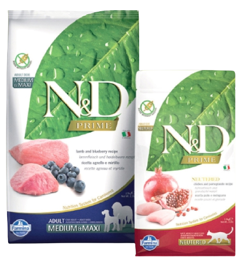
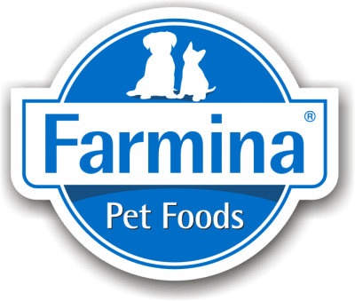
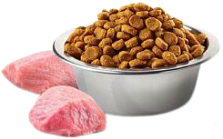
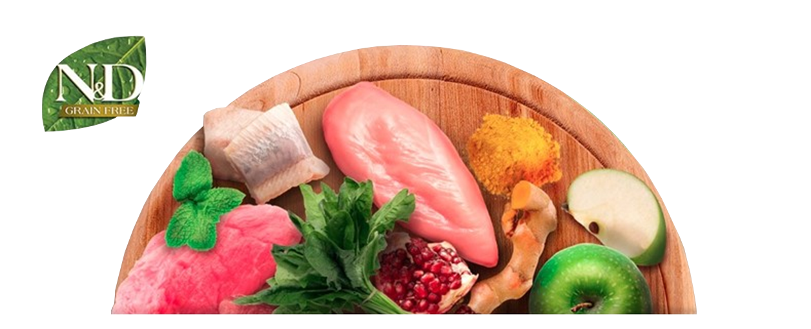
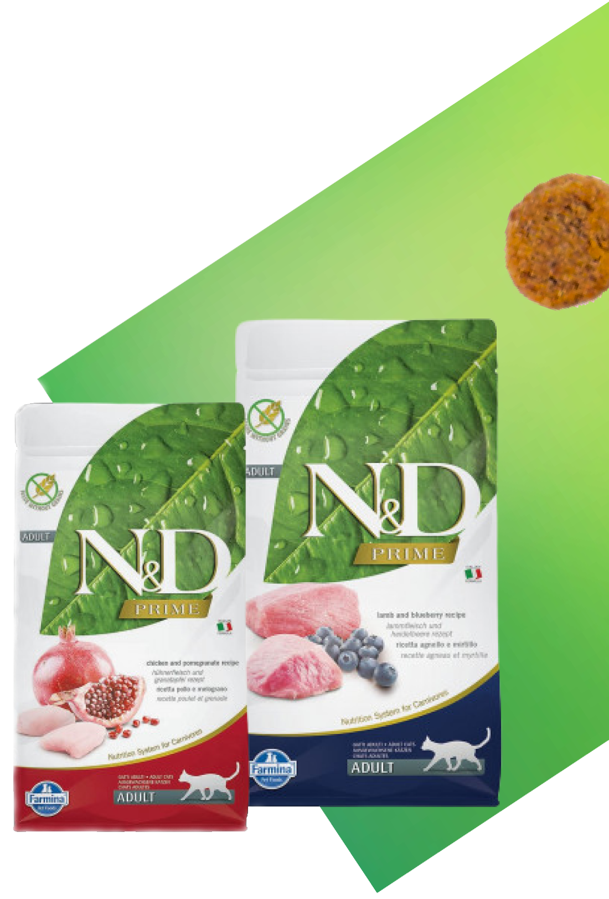
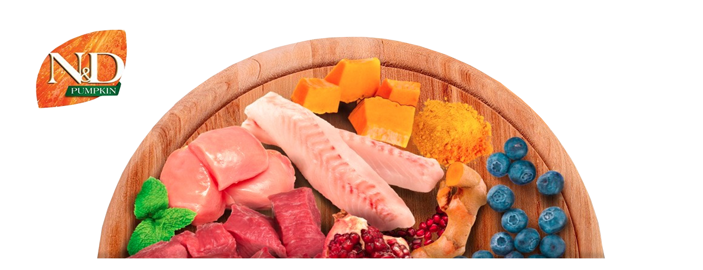
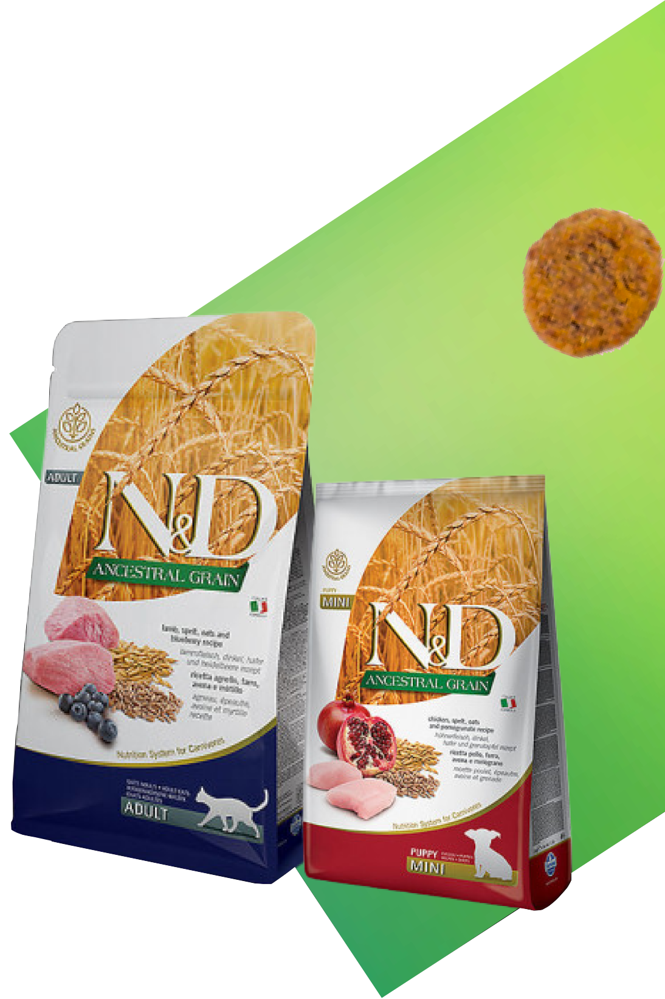
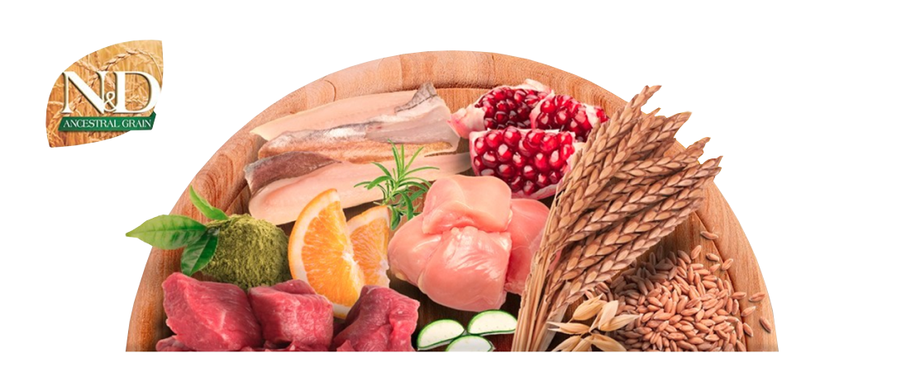
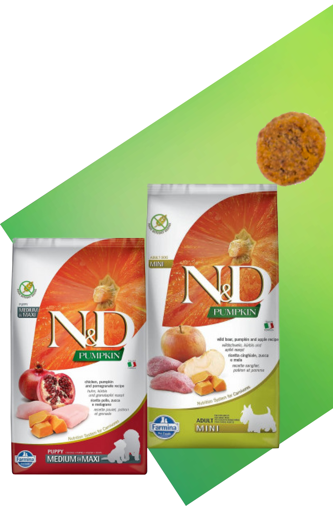

1


Сухий корм Farmina N & D для котів і собак
Це лінія натуральних кормів, які не містять зернових, спеціально розроблених з урахуванням хижої природи собак та котів.

N&D Grain Free Prime
Це лiнiя натуральних кормiв, якi не мiстять зернових, спеціально розроблених з урахуванням хижої природи собак та котів.

-
70% інгредієнтів тваринного походження
овочі і мінеральні речовини і відсутність традиційних зернових -
Зберігання в захисній атмосфері
на стадії пакування, ми замінюємо кисень в упаковках азотом, що гарантує природну безпеку товару -
Багатий набір високоякісних вітамінів
які додаються в продукт “холодним” методом, що забезпечує їх більш тривалу ефективність -
Тільки з натуральними атиоксидантами
екстракти, багаті токоферолом, забезпечують природну безпеку товару -
Запобігає ожирінню і діабету
через низький глікемічний індекс

N&D Low Ancestral Grain
Це лiнiя повнiстю натуральних кормiв для кiшок i собак, якi мiстять обмежену кiлькiсть спадкових злакiв (спельта i овес)

-
60% інгредієнтів тваринного походження
органічного вівса, полби, овочів, фруктів, вітамнів і мінералів. Відсутність традиційних зернових -
Зберігання в захисній атмосфері
на стадії пакування, ми замінюємо кисень в упаковках азотом, що гарантує природну безпеку товару -
Багатий набір високоякісних вітамінів
які додаються в продукт “холодним” методом, що забезпечує їх більш тривалу ефективність -
Тільки з натуральними атиоксидантами
екстракти, багаті токоферолом, забезпечують природну безпеку товару -
Корма містять тільки свіже м’ясо
і жири тільки тваринного походження

N&D Grain Free Pumpkin
Це лiнiя натуральних кормiв без зернових призначена для цуценят, дорослих собак та котів з нормальним рівнем фізичної активності

-
60% інгредієнтів тваринного походження
фрукти, овочі і мінеральні речовини. Відсутність традиційних зернових. -
Зберігання в захисній атмосфері
на стадії пакування, ми замінюємо кисень в упаковках азотом, що гарантує природну безпеку товару -
Багатий набір високоякісних вітамінів
які додаються в продукт “холодним” методом, що забезпечує їх більш тривалу ефективність -
Тільки з натуральними атиоксидантами
екстракти, багаті токоферолом, забезпечують природну безпеку товару -
Корма містять тільки свіже м’ясо
і жири тільки тваринного походження
